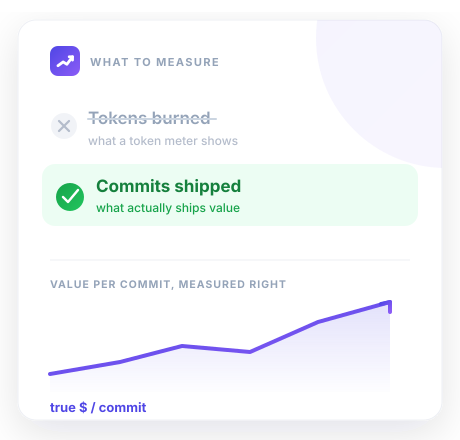
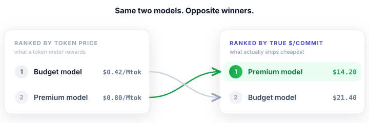
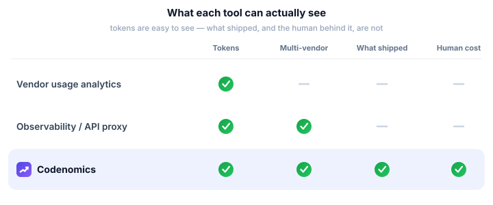

Codenomics is built by Axomiq Labs on a single conviction: in the agent era, the team that understands its true cost of shipping wins — and almost nobody can see it yet.

AI coding agents went from novelty to the largest line item in many engineering budgets in under two years. The reflex was to measure them like an API bill: tokens, dollars, burn rate. Useful, but it answers the wrong question. "How many tokens did I spend?" doesn't tell you whether you spent them well.
The question engineering leaders actually have is economic: what does it cost us to ship a change, and which model, agent, and workflow does it cheapest? Answering that means counting the things a token meter ignores — the prompts, the corrections, the human attention, the work that actually landed. When you do, the rankings invert: the "expensive" model is often the cheaper one, because it needs less of the most expensive resource you have, which is people.

Codenomics didn't start as a product. It started as an argument with an invoice. During the Fable 5 launch window, the new model looked more expensive — it burned more usage credits, so the meter said "pricier." But the practical question wouldn't go away: if it ships the same work with fewer prompts, fewer corrections, and less hand-holding, is it actually the cheaper model? Nominal price couldn't answer that. Nothing on a token dashboard could.
So the first version was a throwaway local script — ClaudeStats — that read the agent's own logs against git activity to settle the question with numbers instead of vibes. It worked well enough that it kept growing: more agents, real driver assumptions, a dashboard, reports. That script is now Codenomics. The conviction underneath it never changed — that the only honest unit of AI coding cost is useful output over everything it really took to get there, model spend and human attention included.
Three things made this the moment. Agents became expensive enough that the spend demands an answer. The tooling consolidated into a handful of CLIs — Claude Code, Codex, Gemini — that each write rich logs to disk. And the difference between models stopped being about capability and started being about efficiency: same task, wildly different cost to get it shipped. Efficiency is now the competitive edge, and an edge you can't measure is one you can't press.
Vendors won't rank themselves against competitors on cost-per-outcome. General observability tools see API traffic but not what shipped, and an API proxy structurally can't see the human half of the equation. Codenomics sits where the truth is — on the developer's machine, next to both the logs and the human — which is where the full cost of a commit can be computed.

Axomiq Labs builds measurement tools for the agent era — instruments for teams that want to run their AI like a serious P&L instead of a mystery invoice. Codenomics is our first.
We're looking for design partners: teams running real money through coding agents who want to see their true economics first, and shape what we build. Reach out at hello@codenomics.ai.